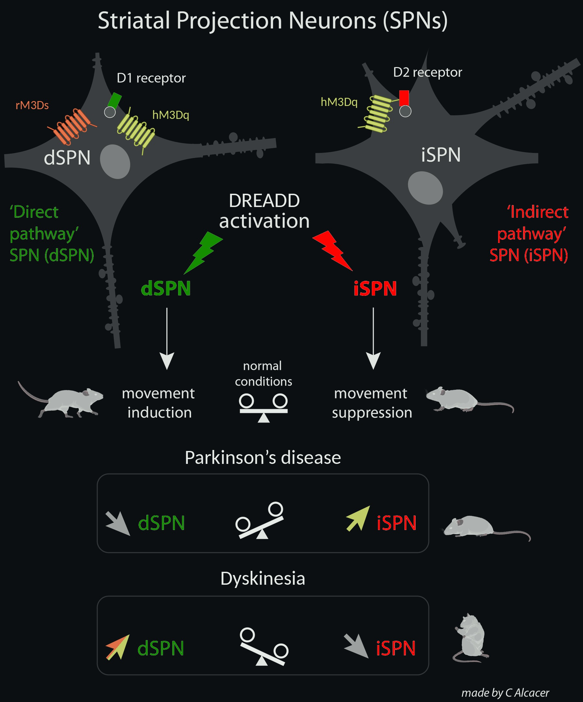
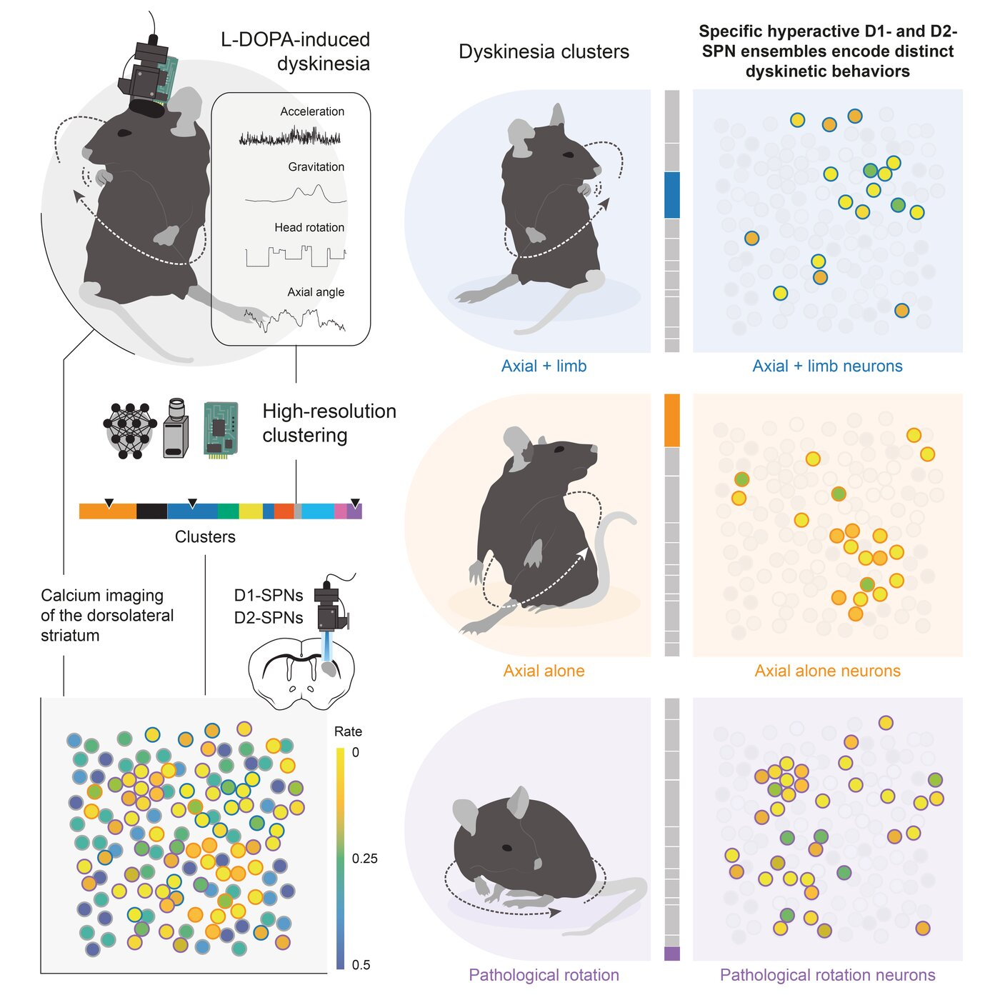
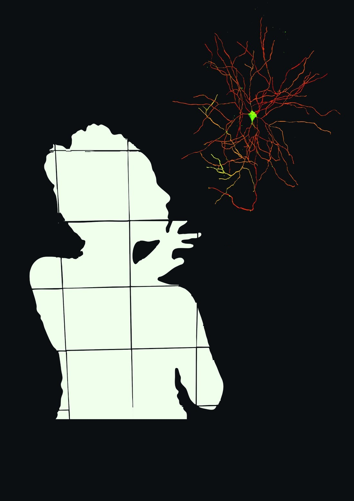

Neuroscientist. Fifteen years inside the parkinsonian striatum. Now teaching machines to read movement, so dopaminergic therapy can follow the patient.
PhD in Neuroscience · Université Paris VIBased at Cajal Neuroscience Center · CSIC
Striatal neurons firing in a freely moving dyskinetic mouse · miniscope through a 1 mm lens
Current work · 2025 – now
Reading movement to personalize therapy
As a Momentum researcher at the Cajal Neuroscience Center (CSIC), I use AI to analyze behavior in mouse models of Parkinson's disease.
I study how different dopaminergic treatments and doses shape motor behavior in parkinsonian mice, using video, motion sensors and machine learning. The goal is a behavioral fingerprint for each therapy, built on movement features that also exist in wearable data from patients.
This work is moving toward the clinic. I am developing a neurotechnology concept, with a small interdisciplinary team, that could help make dopaminergic treatment more personalized and more responsive to each patient's day.
Measure
Capture motor behavior with video pose tracking and motion sensors, at sub-second resolution instead of coarse manual scores.
Decode & predict
Use machine learning to recognize the motor state produced by each dopaminergic treatment and dose, and to anticipate how it changes over time.
Translate
Turn these signatures into tools that help adjust treatment to the person.
Scientific journey
Four cities, one question
Why does the treatment that rescues movement in Parkinson's disease end up causing involuntary movements of its own, and what can we do about it?
L-DOPA-induced dyskinesia is tied to over-active signaling in D1 striatal neurons.
I studied the molecular signaling behind L-DOPA-induced dyskinesia: the role of the Gαolf protein coupled to D1 receptors, and striatal gene expression in dyskinetic mice. I introduced stereotaxic surgery to the lab and established a mouse model of Parkinson's disease and dyskinesia, which the lab kept using after I left.
2012 – 2015LundPostdoc, Lund University Basal Ganglia Pathophysiology Unit Cenci lab ↗
Dyskinesia can be turned up or down by targeting the two striatal pathways.
I set up chemogenetics (DREADDs) in the lab, at a time when few labs used it. Activating direct-pathway neurons made dyskinesia worse; activating indirect-pathway neurons reduced it. The result suggests that therapies acting on both pathways could treat Parkinson's disease and dyskinesia better than single-pathway approaches. The work was covered by Lund University, ScienceDaily and MedicalXpress.
hM3Dq DREADD expression in the mouse striatum after viral delivery

Balance vs imbalance between direct and indirect pathways using DREADD activation
2016 – 2021LisbonPostdoc, Champalimaud Foundation (CF) Champalimaud Research ↗ Neurobiology of Action · Costa lab ↗ (now at the Allen Institute, Seattle)
Each dyskinetic movement has its own hyperactive ensemble of striatal neurons.
Funded by a Marie Skłodowska-Curie grant, I brought Parkinson's models into a lab expert in movement control. I learned in vivo calcium imaging in freely moving mice, built a rotating platform with the Hardware Platform ↗ team from the CF, and used head-mounted inertial sensors, video and machine learning to detect dyskinesias automatically, at a resolution manual scoring cannot reach.
Dyskinetic mouse after L-DOPA (top; inset: zoom with DeepLabCut pose tracking), aligned with the calcium activity of direct-pathway striatal neurons (bottom) · adapted from Alcacer et al., Cell Rep 2025, Movie S3

Graphical abstract, Cell Rep 2025
Rotating platform for imaging during rotational dyskinesia
Turning behavior into a readout of dopaminergic therapy.
With a María Zambrano talent-attraction grant I led an interdisciplinary project on how dopamine loss in the retina, a feature of Parkinson's disease, affects retinal circuits and visual function. I brought a parkinsonian model of retinal dopamine depletion into a retinal electrophysiology lab, co-supervised students, and taught Human Physiology to Pharmacy students at the UAH. At the Cajal Institute I set up fiber photometry and in vivo electrophysiology and supervised students as project manager.
Since 2025 I lead a Momentum project at the Cajal Neuroscience Center (CSIC), part of the programme “Develop your digital talent”, on AI-based behavioral analysis in mouse models of Parkinson's disease. It builds on the pipeline from my Cell Reports paper, which combined pose estimation, head-mounted motion sensors and unsupervised clustering to classify dyskinetic movements with sub-second precision.
I now apply this approach to a broader question: how different dopaminergic drugs, at different doses, shape motor behavior in parkinsonian and intact mice. The goal is an interpretable, data-driven framework that links pharmacology to behavior, built on movement features that also exist in wearable data from patients. The programme includes extensive training in AI (240 ECTS), which I am complementing with training in innovation and technology transfer.
Declined in favor of the International Career Grant.
2019 – 2020ERC Proof of ConceptTeam member
Behavior phenotyping using inertial sensors (PI: R. Costa).
2014 – 2018Crafoord & Lars Hierta FoundationsPI
Swedish foundation grants on striatal cell types in Parkinson's disease.

Reflections
Four countries taught me resilience. Each lab asked me to learn something I didn't know yet.
In Paris I introduced a surgical model the lab didn't have. In Lund I set up chemogenetics and watched a hypothesis hold up, one of the most rewarding moments of my career. In Lisbon I joined a lab far stronger than me in programming and data analysis. It brought self-doubt at first, then motivation, and I left with new confidence and a deep respect for collaboration.
Those experiences point to what comes next: leading interdisciplinary projects where experimental neuroscience and AI meet, and carrying what we learn from movement toward tools that help patients.
Contact
Let's talk.
Open to collaborations in neuroscience, movement disorders and neurotechnology.